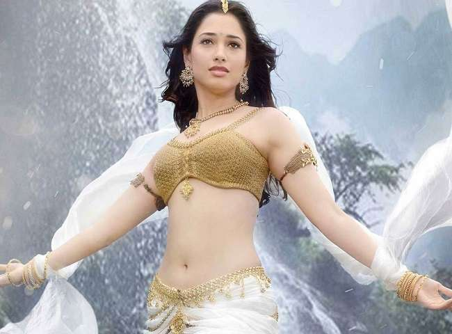

Cpyright © 2018, BAHUBALI
All Rights Reserved
Developed & Maintained by Mangaraj Bidika
The Beginning In the kingdom of Mahishmati, while pursuing his love, Shivudu learns about the conflict-ridden past of his family and his legacy. He must now prepare himself to face his new-found archenemy.The Conclusion Bhallaladeva conspires against his brother to become the king of Mahishmati. He soon gets him killed by Katappa and imprisons his wife. Years later, the son returns to avenge his father's death.


| The Beginning | The Conclusion |
|---|
Bahubali 1: Box office. See also: List of highest-grossing Indian films. Baahubali: The Beginning on the first day of its release collected ₹75 crore (US$11 million) worldwide which was the highest opening ever for an Indian film until Kabali surpassed it in 2016 by earning ₹875 million (US$13 million).
'Baahubali 2: The Conclusion' has become a rage worldwide with its interesting storyline and impressive VFX. The SS Rajamouli-directed film has collected Rs 1567 crore worldwide (cumulative figure of all languages), according to the latest report on Boxofficeindia.com. The fantasy drama that is currently in its fifth week, has grossed Rs 1283 crore in all languages in India while its overseas collections read Rs 284 crore. The film is now marching towards the 2000-crore mark at the worldwide box-office.The Hindi version of the film has set the domestic box-office on fire ever since its release. The Prabhas and Rana Daggubati starrer enjoyed an unparalleled run at the domestic box-office by garnering Rs 246.47 crore in week one, Rs 142.52 crore in week two, Rs 69.43 crore in week three and Rs 29.11 crore in week four. The film has maintained a steady grip in its fifth week as well, as a result of which the Hindi version is all set to cross the 500-crore mark.'Baahubali: The Lost Legends', an animated spinoff of the film's franchise, will soon make its debut on the small screen to enthrall viewers with the story of Baahubali, the King of fictional kingdom Mahishmati.
| PART 1 | PART 2 |
|---|
Amarendra Baahubali, Maharaja Vikramadeva's son, was born in Mahishmati (Magizhmadhi in Tamil). His mother (then Queen) died while giving birth to him. He was named "Baahubali" by his aunt, Rajamatha Sivagami, who later became his foster mother. She recognised his leadership qualities and announced him as the next king after he succeeded in a contest to defend the empire from Kalakaya invasion. Though Bhallala Deva (Palvalthevan in Tamil) killed the Kalakeya king Inkoshi, Baahubali was announced the next king as he showed more honor in the battle. He is envied by Bhallaladeva who manipulates Sivagami who in turn issues an order to Kattappa to execute Baahubali for treason. He is loyal and bound by his promise even at the cost of his throne. He is the father of Mahendra Baahubali alias Sivudu. He was stabbed in the back by Kattappa. He was married to Devasena.He is a skilled warrior with both his sword and the arrows. He can shoot more than one arrow in a single string. He has good battle strategy skills, which proved useful in the battle against Kalakeya tribe.
| Bahubali | Bahubali | Bahubali | Bahubali |
|---|
Princess of Kuntala Kingdom, Devasena is a skilled fighter and a great archer. Amarendra Baahubali falls in love with her during a visit to Kuntala kingdom. Devasena reciprocates the same feeling towards him.[2] She is brave and bold and believes firmly in her decisions. She practices a lot to improve her martial skills. Devasena marries Baahubali, with whom she has a child, Mahendra Baahubali.Bhallaladeva wants Devasena's hand in marriage and makes his mother Sivagami promise that he would get married to Devasena. Devasena (now in love with Baahubali) rejects the marriage proposal by Bhallaladeva and chooses Baahubali instead. Furious, Sivagami declares Bhallaladeva the new king of Mahishmathi.Baahubali eventually dies in the hands of Kattappa, his trusted companion. On the day Baahubali dies, Devasena gives birth to Mahendra Baahubali. Sivagami eventually learns the truth about Bhallaladeva's treachery. Bhallaladeva orders his men to capture Devasena while Sivagami flees with baby Mahendra in her arms.Devasena is then tormented for the next 25 years. During her time in captivity, she prepares a pyre for Bhalla. Devasena would eventually be freed by her son Mahendra Baahubali (now called Sivudu/Shiva). Her son, Sivudu, after learning about his father's heritage and demise, sets out to avenge his death.After Bhallaladeva's death, Devasena becomes the new Queen Mother (Rajamatha) and announces Mahendra Baahubali as the new king of Mahishmati kingdom..
| Devasena | Devasena | Devasena | Devasena |
|---|
Avanthika is a skilled warrior and a member of the rebel group. She devoted her life to a sole mission, saving Devasena from the trap in Mahishmati set by Bhallaladeva. She married Mahendra Baahubali and became the Queen of Mahishmati.[3]She is rebellious, fierce warrior who fights for what is just. Like other female lead of series, she is strong, independent in her decisions and opinions. She participates alongside her husband Mahendra for killing Tyrannical ruler She is the wife of Mahendra Baahubali....
| Avantika | Avantika | Avantika | Avantika |
|---|
Bhallaladeva is the king of Mahishmati. He is a renowned fighter, the only son of Sivagami and Bijjaladeva and elder to Amarendra Bahubali. He is envious of Amarendra Baahubali. When he is made King, he relieves Amarendra of his official duties and later convinces Sivagami that Amarendra is trying to assassinate him. Bhallala Deva takes Devasena as a prisoner and frequently taunts her in her captive. He is killed by on a pyre prepared by Devasena. After his death, his golden statue was disposed of by the order of king Mahendra Baahubali.
| Bhallaladeva | Bhallaladeva | Bhallaladeva | Bhallaladeva |
|---|
Rajamatha (Queen Mother) Sivagami was the former regent of the Mahishmati kingdom. She is a skilled fighter, feared by her enemies and seen to have thwarted enemies' plot to overthrow the Mahishmati kingdom. She is a true leader who treats everyone equally, including her son and nephew. Sivagami became the foster mother of Amarendra Baahubali whose mother, the Queen of Mahishmathi, died after giving birth to him. She assumes the guardian role of the throne, until the princes are ready to rule the kingdom.Sivagami raises both Amarendra Baahubali and Bhallaladeva to be worthy heirs of the throne and when the time comes she decides to make one of them to be a king of Mahishmathi. After a war with Kalakeyas, Sivagami proclaims Baahubali as the new king of Mahishmathi. She is manipulated by her husband Bijjaladeva and son Bhallaladeva, because of which she ordered Kattappa to kill Amarendra Baahubali, her nephew.[3] She sacrifices her life in the attempt to save Mahendra Baahubali, the son of Amarendra Baahubali, from Bhallaladeva's treachery.Her father was ordered to be executed for treason by Maharaja Somadeva, Bijjaladeva's father.[citation needed]She is the most powerful character in Baahubali series who decides the fate of Mahismati. She is a strong headed leader. The first movie of the series portrays her to be judicious in her decisions. The second movie of the series shows her grey side. She has her own imperfections like being egoistic and high temper. She dislikes her son's choice of love in Devasena..
| Sivagami | Sivagami | Sivagami | Sivagami |
|---|
He is as brutal as one can imagine. However, he was extremely faithful to his king, Bhallala Deva. Although Kattappa could have acted against Sivagami using his power and could have taken over the kingdom of Mahishmati, he was extremely faithful and kept his words. The Slave Warrior, Kattappa ....
| kattappa | kattappa | kattappa | kattappa |
|---|
He is a sword-merchant from Persia, who befriends Kattappa during the weapons trade. The character appears in the first film.


| Aslaam Khan | Aslaam Khan | Aslaam Khan | Aslaam Khan |
|---|
Bijjaladeva is the father of Bhallala Deva and the king of Mahishmati until he was succeeded by his nephew Amarendra Baahubali. However, he never reigned as all the royal duties were performed by his wife Sivagami..
| Bijjaladeva | Bijjaladeva | Bijjaladeva | Bijjaladeva |
|---|
In the first part of the Baahubali franchise movie, "Kalakeya" is the name of the savage barbarian tribes that threatened the kingdom of Mahishmati. Kalakeyas are again described in the second and the last part of the movie introducing the emperor Amarendra Baahubali, describing his contribution in vanishing the earlier, ....


| Kalekeya king | Kalekeya king | Kalekeya king | Kalekeya king |
|---|
The movie in question is none other than 'Baahubali: The Beginning'. In the first part of the epic fantasy franchise, Rajamouli appeared for a few short minutes in a barely recognisable avatar, as a spirit seller. Right before the Manohari song kicks in, Prabhas aka Amarendra Baahubali argues with the spirit,Sanga: tribal woman who adopts Mahendra Baahubali after the villagers spot him in the river held by Sivagami. She is the alpha female, being the wife of chieftain and holds a powerful position in her tribe. Bhadrudu is the son of Bhallaladeva. It has not been revealed who his mother is/was. He is killed by Sivudu while the latter was rescuing Devasena from Bhallaladeva. Director Rajamouli later revealed that Bhadrudu was adopted by Bhallaladeva to be his heir.

| Spirit Seller(Rajamouli) | Rohini (Sanga) | Adivi Sesh (Bhadra) | Kumar Verma (Subbaraju) |
|---|
Lyrics for the three songs were penned by Inaganti Sundar and Ananta Sriram, Ramajogayya Sastry, K Shiva Shakti Datta and Chaitanya Prasad were written one each while Aditya and Noel Sean wrote the lyrics for the last song. The music rights for the Tamil, Telugu and Malayalam versions of the soundtrack were....The Beginning (2015) cast and crew credits, including actors, actresses, directors, writers and more. (2016-17)The Conclusion (Telugu) songs lyrics & videos: Baahubali: The Conclusion (Telugu) film directed by S. S. Rajamouli and produced by Shobu Yarlagadda,Prasad Devineni. Baahubali:M.M Keeravani,Mohana Bhogaraju,Revan,Mounima,Geetha Madhuri,Aditi Paul,Deepu,Kailash Kher,Daler Mehndi,Vijay Yesudas,Shweta Mohan,Kala Bhairav,Madhushree,Yamini Aiyar,Sachin Warrier,Sayanora Philip,Karthik,Aadi Sai Kumar,Manoj Muntashir,Shobu Yarlagadda,Prasad Devineni,K Shivashakthi Datta,Chaithanya Prasad,Madhan Karky,Mankonbu Gopalakrishnan ,Lahari Music,T Series,Zee Music Company,Manorama Music,Prem Rakshit,Rama Krishna Aravind,Morgan Benoit,Lee Whittaker,Vincent Tabaillon,Sanjeev Chimmalgi etc..